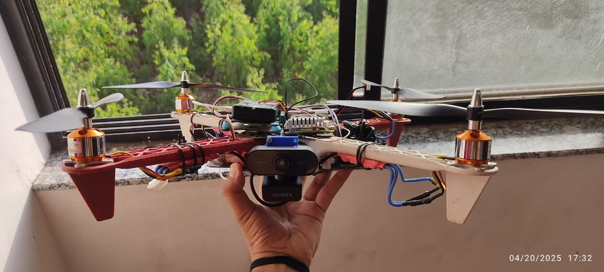

ANAV is an autonomous navigation platform developed to enable intelligent exploration and mapping of unknown environments. The project focuses on real-time localization, mapping, and path planning, allowing a robotic vehicle to navigate without prior knowledge of its surroundings. By integrating computer vision and simultaneous localization and mapping (SLAM) techniques, ANAV creates a digital representation of the environment while autonomously determining safe navigation paths.
The system continuously processes visual information from onboard sensors to estimate its position and construct a map of the surrounding environment. As the vehicle explores, it identifies navigable regions, avoids obstacles, and updates the generated map in real time. The resulting visualization provides operators with valuable situational awareness while enabling autonomous movement through previously unexplored areas.
Navigation in unknown or GPS-denied environments presents significant challenges for autonomous systems. Traditional navigation methods often rely on pre-existing maps or external positioning systems, limiting their effectiveness in dynamic and unstructured settings. There is a need for intelligent systems capable of building their own understanding of the environment while navigating safely and efficiently.
ANAV utilizes visual SLAM algorithms to simultaneously estimate vehicle position and generate an environmental map. The navigation framework combines localization, obstacle detection, and path planning modules to enable autonomous exploration. The generated maps can be visualized in real time, providing both operational insight and a foundation for future mission planning.
The project successfully demonstrated autonomous navigation and environment mapping capabilities in simulated and real-world scenarios. ANAV generated accurate environmental maps while maintaining reliable localization performance, enabling safe and efficient navigation through complex environments.
Competition: ISRO Robotics Challenge (IRoC-U 2024)
Explore the project repository and supporting documentation below: